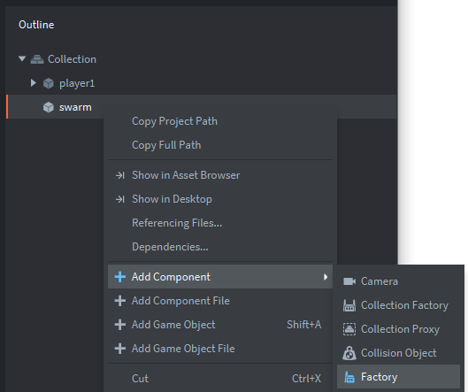
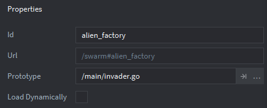

Tutorials for 2D games projects
Landers | Creating a swarm game object.
We are going to make a game object that will not have a sprite or presence in the game on-screen, but instead will be a master controller for spawning invaders with a factory and controlling the invader objects with a script.
- In the assets panel, in the 'main' folder, double click, 'main.collection'.
- In the outline panel, right click, 'Collection' and select, 'Add Game Object'.
- Change the 'Id' property of the game object to be, 'swarm'.
- In the outline panel, right click, 'swarm' and select, 'Add Component', 'Factory'.

- In the properties panel, set the 'Id' property to be, 'alien_factory'.
- In the properties panel, set the 'Prototype' property to be, '/main/invader.go'.

- Save the changes by pressing CTRL-S or 'File', 'Save All'.
That's the swarm object set up ready to construct invader objects! Now we need to write a script to get the factory working. Stage 3c >
 Craig'n'Dave | Version 1.3
Craig'n'Dave | Version 1.3